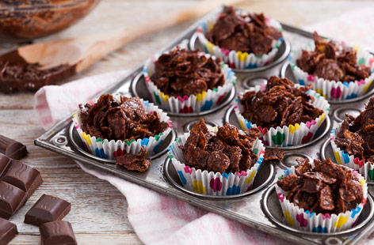

Cornflake Cakes

A British schoolyard classic, these cakes are both easy to prepare and absolutely delicious.
With only 20 minutes and 4 ingredients, you can stock your kitchen with plenty of these sweet treats!
Ingredients
- 75g butter
- 200g baking chocolate
- 4tbsp golden syrup
- 100g cornflakes
Recipe
- Melt the butter, chocolate and golden syrup in a small saucepan over a low heat. Remove and cool for 5 minutes.
- Put 24 cupcake cases into muffin tins, or on a baking tray.
- Then, stir the cornflakes into the mixture. If the ratio of chocolate to cornflakes is excessive, feel free to add more cornflakes until you are satisfied.
- Spoon into the cupcake cases. Allow to set and then serve.
These are an ideal treat for Easter, especially topped with mini eggs. Delicious.
Home